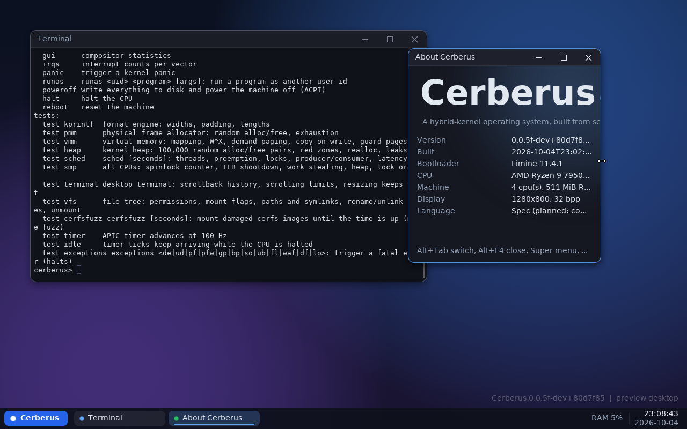
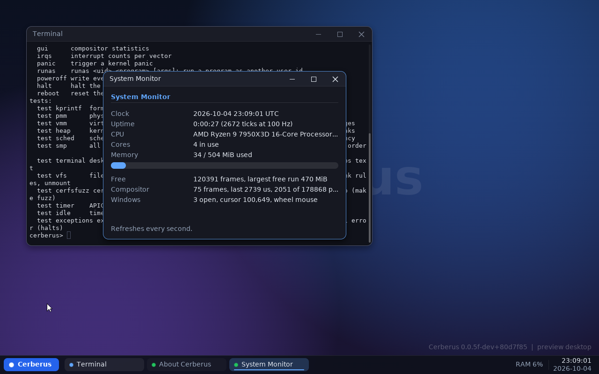

Private and secure by design
No telemetry. Nothing leaves the machine unless you ask. Memory is never writable and executable at once, and every system-call argument is treated as hostile.
Cerberus is a 64-bit OS with its own kernel, its own file system, its own drivers and its own desktop. Nothing here is Linux, BSD or Windows underneath.

No telemetry. Nothing leaves the machine unless you ask. Memory is never writable and executable at once, and every system-call argument is treated as hostile.
A message between two programs takes well under a microsecond. Every performance budget is measured and recorded, so a regression is visible.
One small system, with a written specification and the reasoning behind every decision.
It runs in QEMU and VirtualBox today, brings up every CPU core, and runs protected user programs.
BIOS and UEFI through Limine. ACPI, APIC, HPET. All cores started.
Per-process address spaces, demand paging, copy-on-write fork, guard pages.
Preemptive, four priority levels, per-CPU run queues with work stealing.
Ring-3 processes from position-independent ELF files, with ASLR and a small C library.
Ports, shared memory, signals, futexes, and event queues so servers sleep instead of polling.
A VFS, a page cache, and cerfs: a journaled, checksummed file system that survives power cuts.
AHCI, NVMe, virtio-blk, IDE, PCI with MSI, PS/2 input, framebuffer, ACPI power.
A compositor with anti-aliased text, a taskbar and launcher, a terminal, a system monitor.
W^X everywhere, SMEP/SMAP/UMIP, stack protectors, and fuzzers on every parser.
Anything that needs sub-microsecond speed or special processor instructions stays in the kernel. Everything else runs as an ordinary, protected program.
Each layer only talks to the one below it through well-defined, checked doors.
Figures from the current build on QEMU/KVM with 4 cores. Each one is checked against a written budget.
for 100,000 messages through a port, none lost or reordered
for a blocked server to wake after a message is sent
for a kernel heap allocation and free
to composite a desktop frame
Today the desktop is a preview that runs inside the kernel; phase 12 moves it into its own protected program.


Each phase ends in a tested release, and no phase starts until the one before it passes its acceptance tests.
12 · nextPane, the window serverThe desktop leaves the kernel. Programs cannot read each other's windows or keystrokes.13Facet and the first appsAn app toolkit, then a file manager, text editor, settings, image viewer and calculator.14NetworkingNetwork drivers, an in-tree TCP/IP stack, DHCP, DNS, sockets.15Users, TLS and sandboxingAccounts, encrypted connections, per-application permissions, then a web browser of its own.16Spec, the languageThe compiler, the standard library, and the first system components written in it.17POSIX layer and packagesSo existing software can be ported.18Installer and disk encryptionA bootable USB that installs Cerberus next to, or instead of, another system.19Real hardwareUSB, audio, Wi-Fi on a few chosen chipsets, kernel ASLR, suspend and resume.Spec is the systems language planned for writing Cerberus's own programs. Compiled to native code, statically typed, no garbage collector.
trait Show { fn show(self) -> str } fn dump[T: Show](v: T) region r { let x = r.alloc(...); } syscall write(fd: Fd, buf: &[u8]) -> Result[usize, Errno] mmio struct AhciPort { 0x00: clb: u32 rw, 0x10: is: u32 rw1c, }
The compiler has not been started (phase 16) and the syntax is not final. Until then the system is freestanding C++20.
Pane, the window server, moves the desktop out of the kernel and into its own protected program.